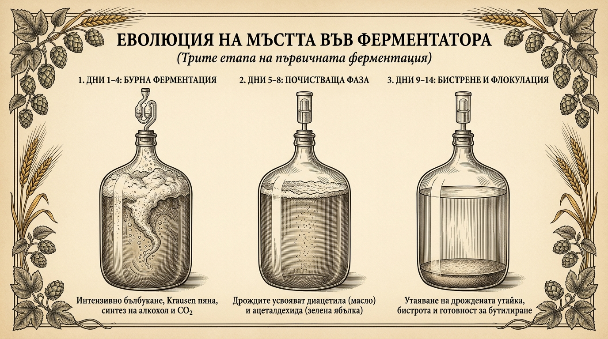
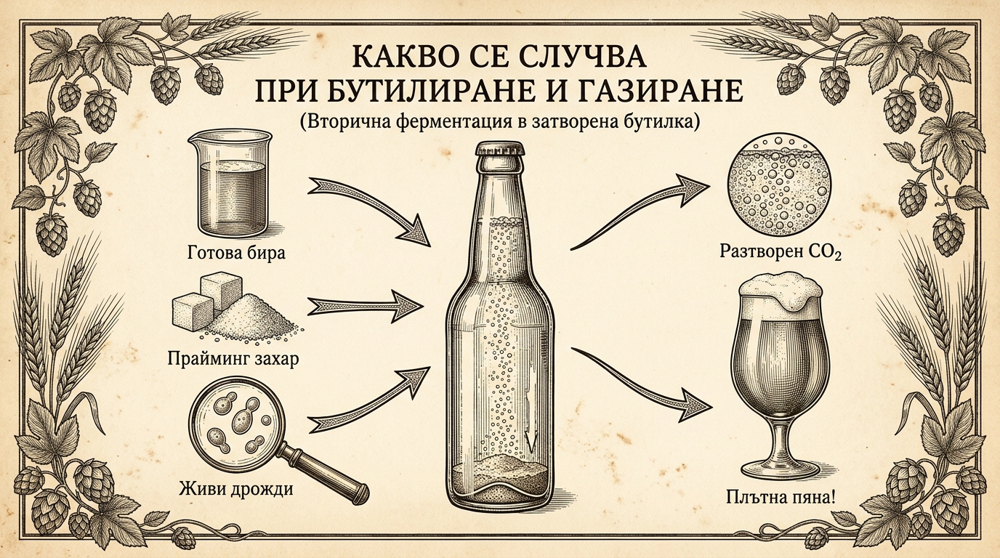
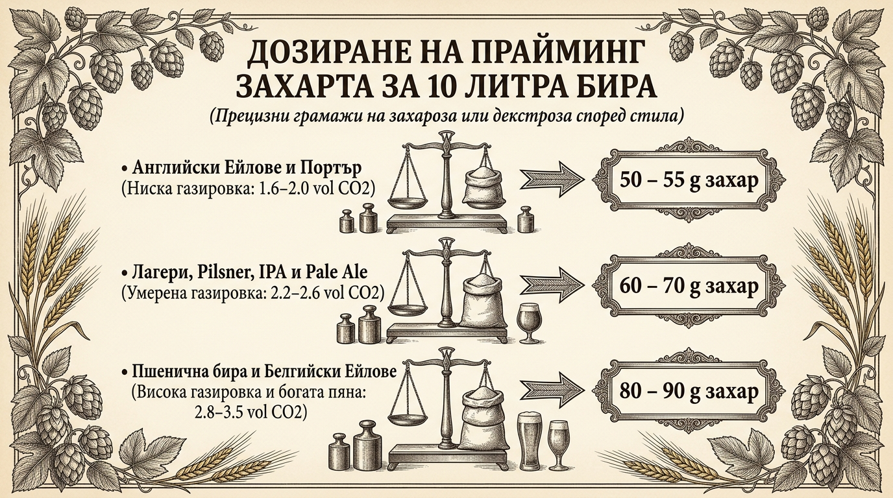
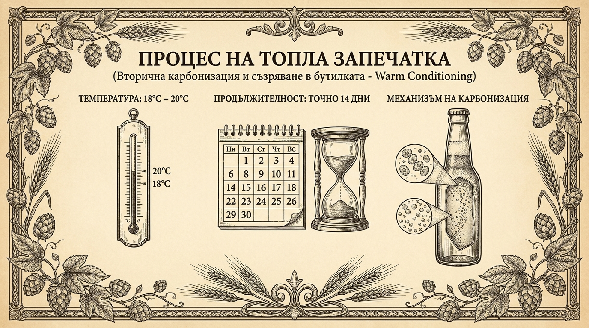
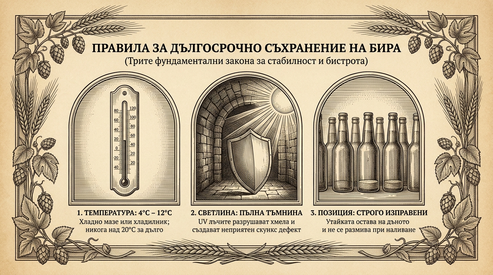

Преходът към бутилката: Финализиране на пивоварния процес
След като засяването на дрождите приключи в края на Глава 4 и проследихме микробиологичното им поведение в Глава 5, във ферментатора са изминали между 10 и 14 дни (при класическите ейлове), от 2 до 3 седмици (при традиционните лагери) или едва 3 до 5 дни (ако сте ползвали бързозатихващия суперщам Kveik). Бурното кипене на течността и интензивното бълбукане през водната тапа постепенно са утихнали.
В този решаващ момент много начинаещи пивовари се изкушават да побързат и да затворят бирата в бутилки. Бутилирането обаче изисква прецизна технологична дисциплина: точната преценка за завършеност на ферментацията, безупречната дезинфекция и стриктното изчисляване на захарта за газиране са тънката разделителна линия между искряща, пенлива и балансирана бира и опасните експлодиращи бутилки.
6.1. Затишието след ферментацията: Кога и как разбираме, че е време за бутилиране?
По време на престоя на мъстта във ферментационния съд се осъществяват три последователни и задължителни биологични етапа:
- Бурна фаза на разграждане на захарите (Дни 1–4): В първите 48 до 72 часа дрождената популация достига максимална биомаса. Клетките енергично консумират простите малцови захари и бързо синтезират етилов алкохол и въглероден диоксид. На повърхността се образува плътен защитен слой пяна (краузен), а водната тапа изпуска мехурчета на всеки две-три секунди.
- Почистваща фаза и съзряване (Rest & Cleanup, Дни 5–8): След изчерпването на лесноусвоимите захари активността видимо спада. В този критичен интервал дрождите преминават към вторичен метаболизъм и започват да усвояват собствените си нежелани странични продукти — най-вече диацетила (внасящ гранясал маслен вкус) и ацеталдехида (придаващ остър мирис на сурова зелена ябълка). Ето защо бирата никога не трябва да се бутилира в момента, в който бълбукането намалее! Преждевременното бутилиране оставя тези дефекти заключени завинаги в бутилката.
- Флокулация и естествено бистрене (Дни 9–14): Осъзнавайки пълното изчерпване на хранителната среда, клетките се слепват и постепенно се утаяват към дъното. На дъното на съда се формира компактен, бежов дрожден слой (yeast cake), а течността над него става бистра, стабилна и готова за бутилиране.

Потвърждение за готовност: Проверката с хидрометър
Основна грешка на начинаещия пивовар е да разчита единствено на активността на водната тапа. Промени в атмосферното налягане, температурни колебания в стаята или микроскопична неплътност на гуменото уплътнение могат да доведат до пълно спиране на мехурчетата, докато ферментацията вътре всъщност все още продължава.
Единственият обективен научен метод за определяне на готовността е измерването на крайната относителна плътност (Final Gravity - FG) с ареометър (хидрометър) или рефрактометър:
- Златното правило: Вземете стерилна проба от бирата и измерете плътността. Повторете измерването след точно 48 часа. Ако двете показания са напълно идентични, ферментацията е завършила окончателно.
- Опасност от „бутилкови бомби“: Ако бутилирате бира с неизчерпани остатъчни захари, дрождите ще продължат да работят в затвореното пространство на бутилката. Вътрешното налягане бързо надхвърля критичните 4 до 5 бара, превръщайки стъклото в опасна експлозивна опасност!
6.2. Подготовка и дезинфекция на съдовете
Преди да напълните първата бутилка, трябва отново да си припомните фундаментите от Глава 3: всичко, което влиза в съприкосновение с охладената и ферментирала бира, трябва да бъде абсолютно дезинфекцирано. Готовата бира съдържа алкохол и хмелови киселини, които я правят по-устойчива от сладката мъст, но диви бактерии като Acetobacter (оцетнокисели бактерии) или дивите дрожди Brettanomyces лесно могат да вкиснат партидата при застояване в мръсна бутилка.
- Механично измиване на бутилките: Ако използвате бутилки за многократна употреба, проверете внимателно дъното срещу силна светлина. Ако има засъхнали стари утайки от предишна бира или плесен, те трябва да се накиснат с топъл алкален разтвор (натриев перкарбонат / ChemiPro Oxi) и да се изтъркат енергично с четка за бутилки. Дезинфектантът не може да проникне под органичен налеп!
- Контактна дезинфекция: Изплакнете чистите бутилки с разтвор на Star San или 70% етилов спирт. Използвайте помпа за изплакване (пулверизатор за бутилки) и поставете съдовете върху дървовиден отцедник за бутилки (bottle tree), за да се отцедят за 2–3 минути преди пълнене.
- Дезинфекция на капачките и аксесоарите: Коронните капачки, силиконовите маркучи, преточващият сифон и пълначът за бутилки трябва да се накиснат в дезинфекционен разтвор непосредствено преди употреба. Никога не варете коронните капачки във вряща вода, тъй като топлината може да увреди вътрешния пластмасов уплътнителен пръстен.
6.3. Сравнителна таблица на бутилките
Изборът на подходяща бутилка влияе върху скоростта на запечатване, безопасността при газиране и дългосрочната защита на пивото от светлина и кислород:
| Тип бутилка | Предимства | Недостатъци | Препоръчителна употреба |
|---|---|---|---|
| Стъклена с коронна капачка (Crown Cap 26 mm) | Индустриален златен стандарт; осигурява абсолютно херметично запечатване и максимална защита срещу кислород. Капачките са евтини и лесни за поставяне. | Изисква специализирана ръчна или настолна затварачка. Капачките са за еднократна употреба. | Универсален избор за всички бирени стилове, дългосрочно лагеруване и отлежаване. |
| Стъклена с механична тапа (Swing-top / Grolsch) | Изключително лесно и бързо затваряне без необходимост от затварачка. Автентична ретро естетика и възможност за многократна употреба. | Гумените уплътнения се износват, напукват и трябва периодично да се подменят. По-висока първоначална цена. | Идеална за домашни пивовари, които искат бързина при пълнене на партиди до 10–20 литра. |
| Пластмасова PET бутилка (Кафява) | Напълно безопасна — не се пръска на остри стъкла при свръхналягане. Позволява лесно тактилно следене на газировката (бутилката става твърда на пипане). | Пластмасата е леко газопропусклива; бирата се окислява по-бързо и губи свежест след 2 до 3 месеца. | Отличен избор за начинаещи пивовари, транспорт при екскурзии и бърза консумация. |
Цветът на стъклото има значение: Винаги избирайте тъмнокафяви бутилки! Кафявото стъкло спира до 98% от вредните ултравиолетови и сини светлинни вълни. Зелените бутилки пропускат значителна част от светлината, а прозрачните не осигуряват никаква защита, което води до фотохимично разграждане на хмеловите изо-алфа киселини и поява на неприятен мирис на скункс (lightstruck / skunky beer).
6.4. Процес на бутилиране и газиране (Priming)
След края на първичната ферментация в затворения ферментатор бирата съдържа съвсем малко естествено разтворен CO2 (около 0.8 до 1.0 обема) и е практически „плоска“. За да се превърне в пенлива напитка с плътна пяна, в пивоварството се прилага естествено вторично газиране в бутилката (Bottle Conditioning).
Към избистрената бира се добавя прецизно премерено количество ферментируема захар (прайминг захар). След запечатване остатъчните живи дрождени клетки в бутилката усвояват тази захар. Тъй като съдът е херметично затворен, отделеният въглероден диоксид не може да излезе в атмосферата, създава вътрешно налягане и се разтваря в обема на течността.

1. Избор на прайминг захар
- Декстроза (гроздова захар / чиста глюкоза): Най-предпочитаният избор в съвременното пивоварство. Тя е монозахарид, който дрождите усвояват мигновено и на 100%, без да оставят никакви странични вкусови нюанси или остатъчна малцова тежест.
- Обикновена бяла захар (захароза): Отлична и напълно достъпна алтернатива, налична във всеки дом. Ферментира чиста, но тъй като е дизахарид, изисква около 9% по-ниска дозировка спрямо декстрозата за постигане на еднакво ниво на газировка.
- Прайминг таблетки (Priming Drops): Фабрично формовани захарни капки, които се пускат по една бройка директно във всяка бутилка (0.33 л или 0.5 л). Изключително удобни за малки партиди, но не позволяват прецизно вариране на газировката според бирения стил.
2. Дозировка на захарта според бирения стил
Различните традиционни бирени стилове изискват различно ниво на наситеност с въглероден диоксид. Предозирането води до бурно преливане на пяна при отваряне (gushing), докато недостигът оставя бирата водниста и безжизнена.

- Английски ейлове, битъри и портъри (Ниска газировка: 1.6–2.0 vol CO2): 50 до 55 грама захар за 10 литра бира (5.0–5.5 г/л). Оставя пивото копринено гладко и лесно за пиене, без натрапчива киселинност от карбонизацията.
- Лагери, Pilsner, American Pale Ale и IPA (Умерена газировка: 2.2–2.6 vol CO2): 60 до 70 грама захар за 10 литра бира (6.0–7.0 г/л). Класическата златна среда — отчетливо свежа газировка, образуваща красива бяла шапка от пяна.
- Баварски вайсбир и Белгийски силни ейлове (Висока газировка: 2.8–3.5 vol CO2): 80 до 90 грама захар за 10 литра бира (8.0–9.0 г/л). Осигурява типичната шампанска игривост и огромна, кремообразна и устойчива пяна.
3. Технология на смесване: Захарен сироп във ферментационен съд
Най-надеждният професионален метод за хомогенно разпределяне на захарта е приготвянето на стерилен захарен сироп:
- Измерете на прецизна кухненска везна необходимото общо количество захар за цялата партида (например 65 г за 10 л).
- Разтворете захарта в около 100–150 мл вода в малка касерола и я кипнете на котлона за 5 минути. Това гарантира пълна стерилност и пълно разтваряне на кристалната решетка.
- Охладете съда и излейте топлия сироп на дъното на дезинфекциран помощен съд за бутилиране (Bottling Bucket).
- С помощта на маркуч преточете избистрената бира от ферментатора на дъното на съда за бутилиране, насочвайки струята по стената, така че да се образува плавен кръгов водовъртеж. Захарта се разпределя съвършено равномерно в целия обем без разплискване и без риск от окисление!
4. Изчисляване на крайното алкохолно съдържание (ABV)
Вторичната ферментация в бутилката преработва добавената захар и повишава алкохолния градус с приблизително 0.3% ABV. Окончателното алкохолно съдържание на готовата газирана бира се изчислява по формулата:
ABV (%) = (OG − FG) × 131.25 + 0.3%
Където OG е началната относителна плътност (Original Gravity), измерена преди засяване на дрождите, а FG е крайната плътност (Final Gravity), измерена преди бутилирането.
6.5. Стъпка по стъпка: Пълнене, запечатване и топла запечатка
След като бирата и захарният сироп са хомогенизирани в съда за бутилиране, същинският процес протича в няколко последователни стъпки:
- Пълнене с пружинен пълнач (Bottling Wand): Свържете дезинфекциран силиконов маркуч от крана на съда за бутилиране към пластмасов пълнач за бутилки с пружинен клапан на върха. Спуснете пълнача до самото дъно на бутилката и натиснете леко. Клапанът се отваря и бирата се пълни отдолу нагоре плавно, без разпенване и без контакт с кислорода от въздуха.
- Осигуряване на въздушна възглавница (Headspace): Когато течността достигне самия горен ръб на бутилката, отпуснете натиска и извадете пълнача. Обемът, който самият пълнач е измествал в бутилката, оставя точно 3 до 4 сантиметра празно пространство в гърлото. Тази въздушна възглавница е абсолютно критична: тя служи като еластичен газов буфер за натрупване на отделения CO2. Бутилка, напълнена плътно догоре без празно пространство, лесно се пръска при най-малкото термично разширение.
- Запечатване с коронни капачки: Поставете дезинфекцирана коронна капачка върху гърлото и я стиснете с ръчна двураменна или настолна затварачка. Проверете дали периферията на капачката е притисната равномерно по целия контур и опитайте леко да я завъртите с пръсти — тя трябва да стои неподвижна и стабилна.
- Топла запечатка (Warm Conditioning): След запечатването бутилките трябва да престоят при умерена стайна температура, за да се осъществи вторичната карбонизация.

Параметри на топлата запечатка: Дръжте бутилките на тъмно място при температура 18°C до 20°C в продължение на точно 14 дни. При по-ниски температури (например в студено зимно мазе) дрождите заспиват и газировката може да отнеме повече от месец. През тези две седмици клетките напълно метаболизират прайминг захарта и превръщат течността в готова газирана бира.
6.6. Условия за съхранение, Cold Crash и трайност
След като 14-те дни на топла запечатка приключат и бирата е напълно газирана, настъпва моментът за финална хладилна стабилизация:
Студеният шок в бутилката (Cold Crash / Лагеруване)
Преместете бутилките в хладилник или студено мазе с температура 2°C до 5°C за минимум 5 до 7 дни преди отваряне. Тази стъпка има две основни цели:
- Максимално разтваряне на газа: Физичният закон за разтворимост на газовете гласи, че въглеродният диоксид се разтваря значително по-устойчиво в студени течности. Студеният шок вкарва CO2 дълбоко в структурата на бирата, създавайки фини, кремообразни и игриви мехурчета вместо груба пяна.
- Уплътняване на дрождената утайка: Ниската температура принуждава остатъчните дрожди да паднат на дъното и да образуват плътно, залепнало за стъклото петно, което позволява лесно наливане на бистра бира в чашата без размътване.

Трите златни правила за дългосрочно съхранение
- Температура: Оптималният диапазон е между 4°C и 12°C. Избягвайте продължително съхранение при температури над 20°C–22°C — топлината ускорява стареенето и оксидацията на малцовите компоненти.
- Светлина: Дръжте бутилките в абсолютна тъмнина (кашони, шкафове, неосветени изби). Ултравиолетовите лъчи за броени часове разграждат изомеризираните алфа-киселини от хмела.
- Позиция: Бутилките трябва да се съхраняват винаги строго изправени! В легнало положение бирата има по-голяма контактна повърхност с въздушния джоб в гърлото, а дрождената утайка полепва по цялата дължина на стената и се излива в чашата.
Оптимален прозорец за консумация според бирения стил
Не всяка бира печели от отлежаване. Различните стилове имат строго индивидуален пик на вкусовите си качества:
| Стилово семейство | Оптимален прозорец | Максимална трайност | Специфика и поведение във времето |
|---|---|---|---|
| Хмелови стилове (IPA, NEIPA, APA) | 2 – 8 седмици | 4 – 6 месеца | Консумират се възможно най-пресни! Етеричните хмелови масла са летливи и бързо се окисляват, губейки яркия си тропически и цитрусов аромат. |
| Класически домашни ейлове (Pale Ale, Amber, Stout) | 1 – 4 месеца | 6 – 9 месеца | Златната среда за балансиран вкус. Хмелът и малцът се хармонизират, а горчивината става мека и закръглена. |
| Зърнени лагери (Pilsner, Helles, Vienna) | 2 – 6 месеца | 12+ месеца | Изключително стабилни благодарение на продължителното студено лагеруване. Вкусът става кристален, чист и подчертано малцов. |
| Силни и тъмни бири (Imperial Stout, Barleywine) | 6 – 12 месеца | 2 – 5 години | Високият алкохолен процент (над 8%–10% ABV) действа като естествен консервант. С годините тези бири развиват дълбоки нотки на портвайн, стафиди, смокини и тъмен шоколад. |